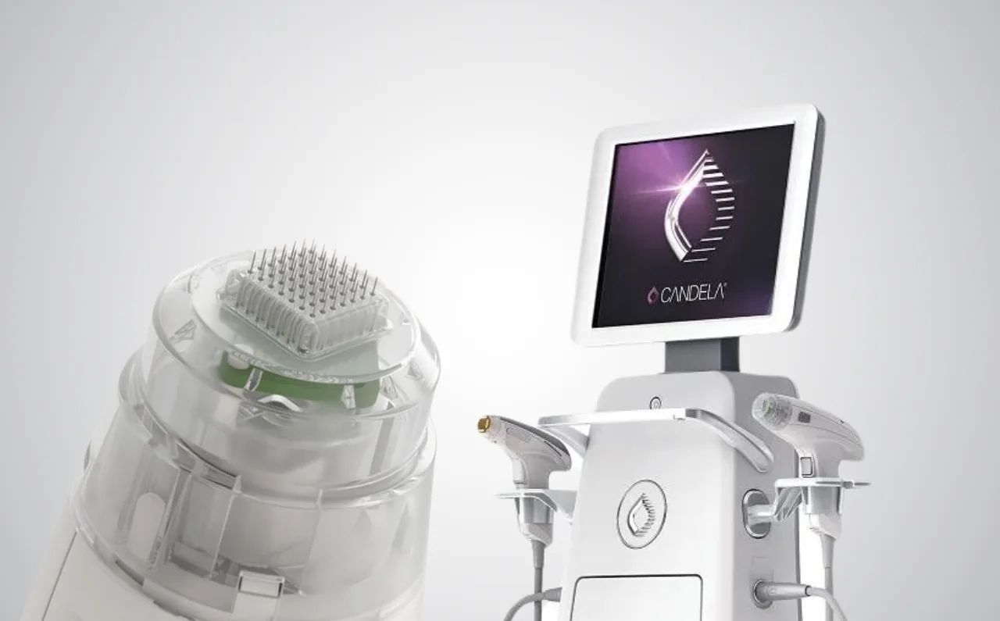
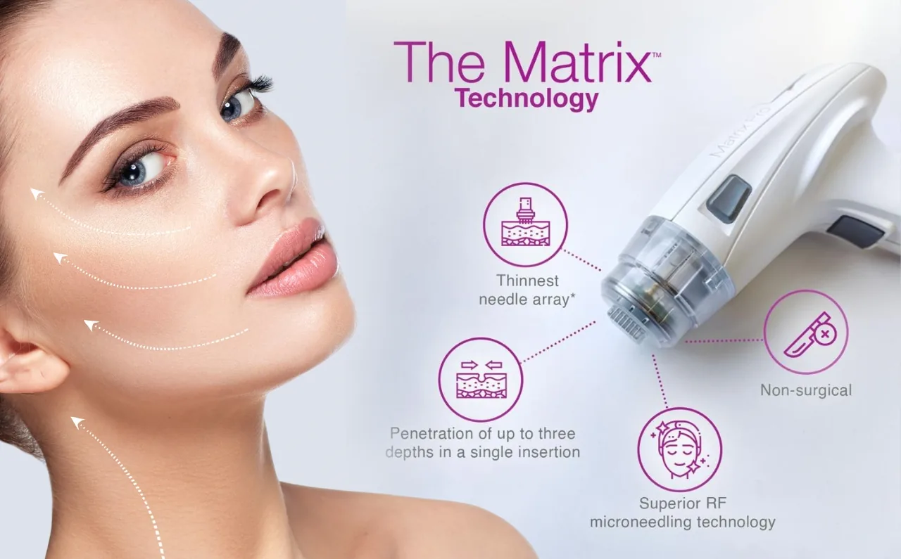
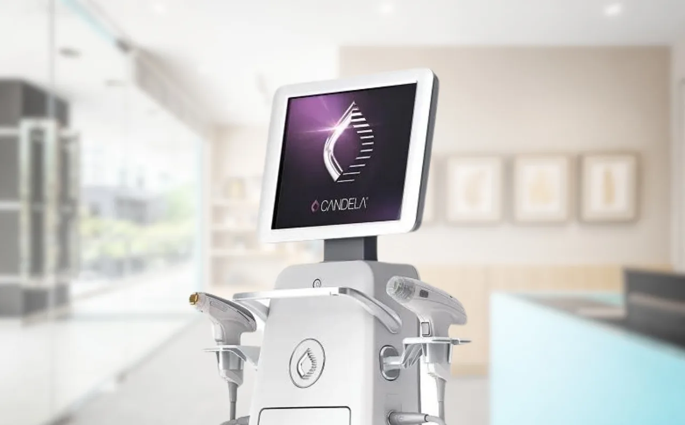

Uneven skin texture and tone can be incredibly frustrating, leaving you feeling self-conscious about your complexion. Whether it’s rough patches, stubborn discolouration, or a dull, lacklustre appearance, these skin concerns can make it feel like achieving a smooth, radiant glow is out of reach.
If you’re struggling with uneven skin, you’re not alone, and there is a solution that can help restore your skin’s smoothness and radiance.
Profound Matrix is an aesthetic treatment designed to address skin texture and tone, offering a non-invasive way to rejuvenate your skin. This advanced procedure helps target and correct unevenness, bringing out a youthful, glowing complexion that you can feel proud of.
Keep on reading this blog to learn more about this latest treatment, available at Dr Abby Clinic!
What Causes Uneven Skin Texture and Tone?

Uneven skin texture and tone can be caused by factors like acne, sun damage, or aging. Discover how treatments like Sublative eMatrix can help restore your skin’s smooth, glowing appearance.
Uneven skin texture and tone can be caused by a variety of factors, often working together to affect the overall appearance of your skin.
Understanding the common causes can help you better address these concerns and find the most effective treatments.
- Ageing: As we age, the skin’s natural processes begin to slow down. Collagen production decreases, leading to a loss of elasticity and firmness. This can result in fine lines, wrinkles, and a rougher texture, making the skin appear less smooth and radiant.
- Sun Damage: Prolonged exposure to the sun’s harmful UV rays can cause significant damage to your skin, leading to hyperpigmentation, dark spots, and uneven skin tone. Over time, this damage can also contribute to a rougher skin surface, as the skin becomes thickened and less even.
- Acne Scars: While acne may be a temporary condition, the scars it leaves behind can linger for much longer. These scars often result in a dimpled or pitted texture, which disrupts the skin’s smooth surface and can make the skin appear uneven and unevenly pigmented.
- Environmental Factors: Pollution, harsh weather conditions, and stress can also take a toll on your skin. These environmental stressors can lead to a dull complexion, clogged pores, and an uneven skin texture, making it difficult for your skin to maintain its natural radiance.
Together, these factors create skin that feels rough to the touch, appears discoloured, and lacks the smooth, even tone many people desire. Thankfully, with the right treatment, these concerns can be addressed, helping you achieve a complexion that’s smoother, more even, and full of radiance.
What is Profound Matrix?

Discover the power of Profound Matrix, a cutting-edge treatment device designed to rejuvenate your skin, targeting deep layers for a smoother, firmer complexion.
Profound Matrix is the latest aesthetic device treatment available at Dr Abby Clinic. This non-invasive skin treatment designed to address uneven skin texture and tone. Using advanced technology, it targets a range of skin concerns, including fine lines, wrinkles, and uneven pigmentation, helping you achieve a smoother, more radiant complexion.
At the core of Profound Matrix is a combination of radiofrequency (RF) and microneedling.
The RF energy penetrates deep into the skin to stimulate the production of collagen and elastin, which are essential for maintaining skin firmness, elasticity, and smoothness. Meanwhile, microneedling creates tiny micro-channels in the skin’s surface, encouraging the skin to naturally heal and regenerate.
Together, these technologies work synergistically to revitalise the skin from within. The result is a significant improvement in skin texture and tone, with enhanced smoothness, reduced discolouration, and a more youthful, glowing appearance.
Profound Matrix is a versatile treatment, offering benefits for those with acne scars, sun damage, fine lines, and general unevenness. As a non-invasive procedure, it requires little downtime, making it an excellent option for those looking for a safe, effective solution to enhance their skin’s texture without the need for surgery.
How Profound Matrix Works to Improve Skin Texture and Tone
Experience smoother, more radiant skin with Profound Matrix. See how this treatment works to improve skin texture and tone for a glowing, youthful appearance.
Profound Matrix is a treatment that works by harnessing the power of radiofrequency energy and microneedling to stimulate your skin’s natural healing processes. By targeting the deeper layers of the skin, it effectively addresses several common concerns, including uneven texture, fine lines, and skin laxity.
- Stimulating Collagen Production: The radiofrequency energy delivered during the Profound Matrix treatment penetrates deep into the dermis, triggering the body’s natural response to produce new collagen and elastin fibres. This rejuvenation process helps restore the skin’s structure, promoting a firmer and more even texture.
- Addressing Uneven Texture and Fine Lines: The combination of radiofrequency and microneedling addresses both the surface and deeper layers of the skin, making it highly effective in smoothing out rough patches and reducing fine lines. The microneedling creates tiny, controlled micro-injuries that stimulate the skin’s repair mechanisms, while the radiofrequency energy works beneath the surface to enhance overall skin quality.
- Enhancing Skin Laxity and Radiance: Profound Matrix helps to combat skin laxity by tightening and lifting the skin, restoring a more contoured and youthful appearance. In addition to improving texture and tone, the treatment promotes a natural, radiant glow.
The Benefits of Profound Matrix for Uneven Skin

Discover how Profound Matrix can help you achieve smooth, radiant skin. From improving texture to enhancing skin tone, explore the transformative benefits that target uneven skin for a more youthful appearance.
Profound Matrix offers a range of long-term benefits that go beyond just improving skin texture and tone. By stimulating collagen production and encouraging natural skin rejuvenation, this treatment helps create a smoother, more even complexion that continues to improve over time.
- Long-Term Improvement in Skin Texture and Tone: As collagen production is stimulated, the skin becomes firmer and more resilient, improving both texture and tone. Over the course of several weeks, the skin continues to regenerate, leading to a smoother, more even appearance that can last for months.
- Targeting Multiple Skin Concerns Simultaneously: Profound Matrix is a versatile treatment that can address a variety of skin concerns at once. By stimulating collagen production and enhancing skin texture, it helps to reduce the appearance of acne scars and pigmentation, smooth out rough patches, and even out skin tone.
- Suitable for Various Skin Types and Concerns: Whether you have oily, dry, or sensitive skin, the treatment can be tailored to your individual needs. The non-invasive nature of the procedure makes it safe for most skin types, with minimal risk of irritation or side effects.
Why Choose Dr Abby Clinic for Your Profound Matrix Treatment

Experience the power of Profound Matrix at Dr Abby Clinic for smoother, more radiant skin. Our cutting-edge technology helps you achieve the flawless complexion you deserve.
When it comes to advanced aesthetic treatments like Profound Matrix, choosing the right clinic is crucial for achieving the best results. At Dr Abby Clinic, we pride ourselves on offering professional, personalised care tailored to your unique skin needs. With our experienced team of practitioners and state-of-the-art equipment, you can trust that your skin is in the best hands.
- Expertise and Personalised Care: At Dr Abby Clinic, our team is dedicated to understanding your individual skin concerns and goals. We take the time to assess your skin and create a customised treatment plan that is designed to deliver the most effective results.
- State-of-the-Art Equipment: Dr Abby Clinic is equipped with the latest and most advanced technologies, ensuring that you receive the highest quality treatments available. We invest in cutting-edge equipment to provide the best outcomes for our clients, and Profound Matrix is no exception.
- Experienced Practitioners: Our team consists of experienced and skilled practitioners who are well-versed in the art of aesthetic treatments. With their in-depth knowledge and expertise, they are able to perform the Profound Matrix treatment with care, precision, and the highest standards of safety.
When you choose Dr Abby Clinic for your Profound Matrix treatment, you’re not only choosing a clinic that delivers exceptional results, but also one that offers a personalised and professional experience.
Our commitment to your care and satisfaction ensures that you’ll leave feeling more confident and with the radiant, even skin you’ve always wanted.
Ready to Transform Your Skin?
If you’re ready to take the first step towards smoother, more radiant skin, Profound Matrix could be the solution you’ve been looking for.
We invite you to book a consultation with Dr Abby today to learn more about how Profound Matrix can transform your skin.